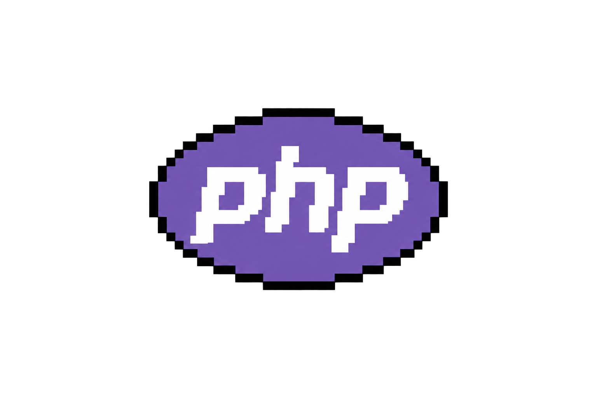
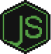

Principal

PHPLV. 7.5
LaravelLV. 7.5
APIs RESTLV. 7.5
IntegraçõesLV. 7.5
ClasseFull Stack Pleno
EspecialidadeBack-end
ExperiênciaDesde 2018


API em Laravel organizada com o padrão Repository.
PHP · Laravel · APIProjeto de estudo com as atualizações do Laravel 11.
PHP · Laravel 11Estudo de mensageria integrada a aplicações Laravel.
Laravel · RabbitMQAPI com autenticação JWT desenvolvida em FastAPI.
Python · FastAPI · JWTAmbiente Docker com PHP e Nginx para aplicações web.
Docker · PHP · NginxProjeto de estudo dedicado a testes e desenvolvimento orientado por testes.
Laravel · TestesManutenção de sistemas internos em PHP e desenvolvimento de páginas com HTML, CSS e JavaScript.
Ensino de HTML, CSS e Python para mais de 100 estudantes.
Modernização de sistemas legados, migração para Laravel, regras de negócio e interfaces com AJAX e JSON.
Laravel, Eloquent, jobs, queues, APIs REST com JWT, integrações externas e otimização de queries.
Atuação full stack com maior foco em back-end, APIs, integrações, automações e serviços em nuvem.
Sou Desenvolvedor Full Stack Pleno na Eletromidia, atuando profissionalmente com tecnologia desde 2018 e com foco maior em back-end. Trabalho principalmente com PHP e Laravel na construção e manutenção de APIs RESTful, integrações entre sistemas, bancos MySQL, PostgreSQL e SQL Server, automações com n8n, Docker e serviços na GCP e AWS. Também aplico desenvolvimento orientado por especificações para transformar requisitos em entregas mais claras e confiáveis. Sou formado em Sistemas para Internet pela FATEC Carapicuíba e, ao longo da minha trajetória, atuei na Secretaria Municipal de Cultura de São Paulo e como instrutor e mentor técnico em iniciativas de formação de novos profissionais de tecnologia.
FATEC Carapicuíba
Sistemas para Internet · 2016 - 2019
FMU
Análise e Desenvolvimento de Sistemas · 2014 - 2016
Português
Nativo ou bilíngue
Inglês
Proficiência profissional limitada
Metodologia de Design Thinking
Técnico de Informática
Vamos conversar sobre APIs, integrações, automações ou desenvolvimento de produtos digitais.